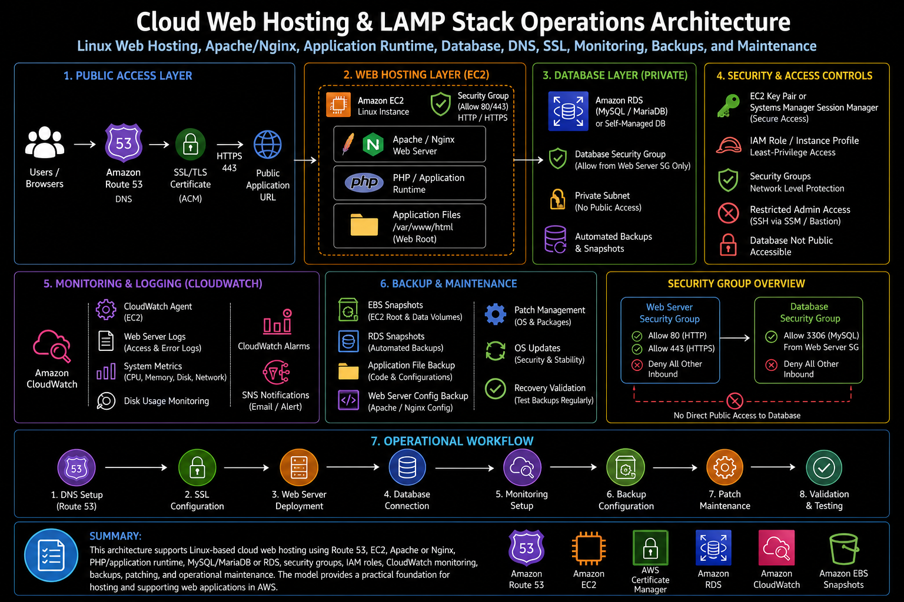

Project Documentation
Cloud Web Hosting & LAMP Stack Operations
This project documents cloud web hosting and LAMP stack operations for Linux-based web applications hosted on AWS. The work focused on building and supporting a practical web hosting environment using Amazon EC2, Ubuntu Linux, Apache, PHP, MySQL or MariaDB, Route 53 DNS, SSL/TLS configuration, security groups, IAM access controls, EBS storage, backups, CloudWatch monitoring, log review, deployment updates, and production troubleshooting.

Overview
This project documents cloud web hosting and LAMP stack operations for Linux-based web applications hosted on AWS. The work focused on building and supporting a practical web hosting environment using Amazon EC2, Ubuntu Linux, Apache, PHP, MySQL or MariaDB, Route 53 DNS, SSL/TLS configuration, security groups, IAM access controls, EBS storage, backups, CloudWatch monitoring, log review, deployment updates, and production troubleshooting.
The project was not limited to launching a single EC2 instance. It represented the operational work required to keep a cloud-hosted web application stable, secure, reachable, and supportable. That included validating DNS resolution, configuring the web server, managing Linux services, reviewing file permissions, supporting database connectivity, checking application logs, monitoring server health, applying updates, and maintaining a repeatable runbook for troubleshooting and maintenance.
Background
Many cloud environments still support business applications that run on traditional Linux web stacks. Even when newer architectures use containers or serverless services, EC2-hosted applications remain common for WordPress sites, PHP-based applications, internal tools, vendor applications, and workloads that require direct control over the operating system and web server configuration.
A LAMP stack requires multiple layers to operate correctly. DNS must point users to the correct endpoint. The server must allow the right network traffic. Apache must listen on the expected ports and serve the correct virtual host. PHP must be installed and configured for the application. MySQL or MariaDB must be reachable and protected. File permissions must allow the web server to read and write only what it should. Logs must be reviewed when issues occur. Backups and monitoring must be in place so the environment can be supported after deployment.
This project focused on the operational side of web hosting: making the environment reliable, maintainable, secure enough for production support, and easier to troubleshoot when application or infrastructure issues appear.
Business Problem
The business problem was web hosting reliability and support readiness. A web application can appear simple from the outside, but production support depends on many connected components. If DNS is incorrect, users cannot reach the application. If SSL/TLS is misconfigured, browsers may block access or show security warnings. If Apache is down, PHP is misconfigured, the database is unavailable, or file permissions are wrong, the application may fail even though the EC2 instance itself is running.
Another challenge was repeatability. Manual server builds and undocumented configuration changes make troubleshooting harder over time. When a web server has been changed several times without clear notes, support teams may not know which Apache virtual host is active, where application files are stored, which database the application uses, what logs to review, or how backups are handled.
The platform need was to create a clearer operating model for cloud-hosted web applications. That meant standardizing the build pattern, documenting the deployment path, validating DNS and SSL, protecting the server with security groups and IAM, monitoring the operating system and application layer, and creating a practical workflow for updates, troubleshooting, backup review, and recovery.
Architecture
The architecture used Amazon EC2 as the compute layer for the web server. Ubuntu Linux provided the operating system, Apache provided the web server layer, PHP provided the application runtime, and MySQL or MariaDB provided the database layer. Depending on the workload pattern, the database could run locally on the instance for a smaller deployment or be separated into a managed database service for stronger operational separation.
Route 53 provided DNS management for the application endpoint. DNS records pointed the public application name to the correct hosting endpoint, such as an EC2 public address, Elastic IP address, load balancer, or other approved target. SSL/TLS was handled through certificate configuration appropriate to the hosting pattern. For load-balanced architectures, ACM could manage the certificate at the load balancer. For direct EC2 hosting, certificate management could be handled on the server through Apache configuration and a trusted certificate source.
Security groups controlled inbound access to the web server. HTTP and HTTPS were allowed only where required, while administrative access was restricted or replaced with a safer access method such as Systems Manager Session Manager when available. IAM roles supported AWS service access from the instance without placing long-term credentials on the server. EBS volumes provided persistent storage for the operating system and application files, while snapshots and backup processes supported recovery.
CloudWatch supported monitoring and troubleshooting by collecting metrics, alarms, and logs where configured. Linux service management, Apache logs, application logs, PHP errors, database logs, disk usage checks, and system metrics were all part of the operational view. This architecture created a practical web hosting model that could be deployed, monitored, updated, and supported through a repeatable process.
What I Did
I supported the build and operations of a cloud-hosted Linux web application stack using EC2, Ubuntu, Apache, PHP, MySQL or MariaDB, DNS, SSL/TLS configuration, security groups, storage, monitoring, and backup practices. The work included configuring the server, validating web service behavior, reviewing Apache virtual host settings, confirming application file paths, checking Linux permissions, validating database connectivity, and supporting application access through DNS and HTTPS.
I also supported production-style troubleshooting. When a site was unavailable or not behaving as expected, the review needed to move through the full stack: DNS resolution, network reachability, security group rules, instance state, Linux service status, Apache configuration, PHP runtime behavior, application errors, database connectivity, storage capacity, and log output. This created a structured troubleshooting model instead of guessing at one layer.
The work also included improving operational readiness. A web hosting environment needs clear documentation for how the server is configured, where the application files are located, how deployments are applied, how SSL is managed, how backups are validated, what logs to check, and what steps to follow during an outage or maintenance window. This helped make the environment easier to support after initial deployment.
Implementation Details
1. EC2 Linux server setup
The hosting environment used an EC2 instance running Ubuntu Linux as the base operating system. The instance required the correct network placement, security group rules, storage configuration, instance profile, and operating system packages. Initial setup included updating the operating system, installing required packages, enabling needed services, and preparing the server for application deployment.
2. Apache web server configuration
Apache was configured as the web server layer. This included enabling the required Apache modules, configuring the document root, creating or updating virtual host files, validating listening ports, and confirming that the expected site was being served. Apache configuration was reviewed carefully because incorrect virtual host settings can cause the wrong site to load, HTTPS redirects to fail, or application routes to return errors.
3. PHP application runtime
PHP was installed and configured to support the application runtime. For WordPress or other PHP-based applications, the PHP version, required extensions, file upload settings, memory limits, and Apache-PHP integration needed to be reviewed. Runtime validation helped confirm that the application could execute PHP code correctly instead of only serving static files.
4. MySQL or MariaDB database configuration
The database layer used MySQL or MariaDB depending on the application requirement. Database configuration included creating the application database, managing application credentials, validating database connectivity, reviewing access permissions, and confirming that the web application could read and write as expected. For stronger separation, the database layer could be moved to a managed database service so backups, patching, and availability were easier to operate.
5. Application deployment and file permissions
Application files were deployed into the configured web root or application directory. File ownership and permissions were reviewed to ensure Apache could read the files it needed while avoiding overly permissive access. For PHP-based applications, permissions were especially important because plugin updates, uploads, cache directories, and generated files may require write access in specific locations.
6. Route 53 DNS management
Route 53 supported DNS records for the application endpoint. DNS work included creating or updating the required records, validating that records resolved correctly, checking TTL behavior, and confirming that the public application name pointed to the expected target. DNS validation was important because a correctly configured server is still not useful if users are routed to the wrong endpoint.
7. SSL/TLS certificate management
SSL/TLS configuration supported secure HTTPS access. Depending on the architecture, certificates could be managed at a load balancer using ACM or configured directly on the EC2 web server. Validation included confirming that HTTPS loaded correctly, certificate chains were trusted, redirects behaved as expected, and browsers did not report security warnings.
8. Security groups and access controls
Security groups were used to control inbound network access. Web traffic was limited to required ports such as HTTP and HTTPS, while administrative access was restricted. IAM instance profiles supported controlled AWS access from the instance, reducing the need to store long-lived credentials on the server. This helped improve the security posture of the hosting environment.
9. EBS storage and backup review
EBS storage supported the operating system, application files, and any local data. Storage review included checking disk capacity, file system usage, volume configuration, and snapshot or backup coverage. Backup planning was important because application recovery depends on more than the EC2 instance; it also depends on application files, database state, configuration files, and DNS or certificate details.
10. CloudWatch monitoring and logs
CloudWatch monitoring supported operational visibility. Instance metrics, disk usage checks, alarms, and log collection helped identify performance or availability issues. Apache access logs, Apache error logs, PHP errors, system logs, and database logs were reviewed during troubleshooting. This made production support more evidence-based and reduced time spent guessing where a problem originated.
11. Linux service management
Linux service management was part of the daily operations model. Services such as Apache, PHP handlers, MySQL or MariaDB, CloudWatch Agent, and SSM Agent needed to be checked, restarted, enabled, or troubleshot when issues occurred. Service status checks helped separate application problems from server or process-level problems.
12. Deployment updates and maintenance
Deployment updates followed a controlled process. Before changes were applied, the current state was reviewed and backup or rollback options were considered. Updates could include application file changes, package updates, Apache configuration changes, PHP settings, plugin updates, database changes, or SSL renewals. Post-update validation helped confirm that the application still loaded and core functionality remained available.
Validation
Validation started with infrastructure checks. The EC2 instance needed to be running, reachable, correctly placed in the network, protected by the expected security group rules, and configured with the appropriate IAM role. EBS storage needed enough capacity, and the operating system needed healthy service status for the web server, database, and monitoring agents.
Web server validation focused on Apache configuration and application response. The site needed to load over the expected protocol, the correct virtual host needed to respond, redirects needed to behave correctly, and Apache logs needed to show successful requests without repeated errors. PHP validation confirmed that dynamic application pages rendered correctly and that required extensions were available.
Database validation confirmed that the application could connect to MySQL or MariaDB, authenticate successfully, retrieve data, and write where required. For WordPress or PHP-based applications, this included validating the database connection settings, application tables, administrative access, and any plugin or application behavior that depended on database writes.
DNS and SSL validation confirmed that the application name resolved correctly, HTTPS worked as expected, the certificate was trusted, and users were not presented with browser warnings. Monitoring validation confirmed that CloudWatch metrics, alarms, and relevant logs were available for support and troubleshooting.
Operational Workflow
The operational workflow began with environment review. The server state, DNS record, security group, Apache configuration, application directory, database connection, SSL certificate, and monitoring coverage were checked to understand the current hosting posture. This helped establish a baseline before making changes or investigating incidents.
For deployment updates, the workflow followed a controlled sequence: review the current application state, confirm backup or rollback options, apply the update, restart or reload services if required, validate the site over HTTP or HTTPS, review logs, and confirm that core application functions still worked. This reduced the risk of introducing an outage during routine maintenance.
For troubleshooting, the workflow moved layer by layer. DNS resolution was checked first, followed by network access, security group rules, EC2 status, Linux service status, Apache configuration, PHP behavior, application logs, database connectivity, disk usage, and CloudWatch signals. This structured approach made it easier to isolate whether an issue was caused by DNS, infrastructure, web server configuration, application code, database access, or resource capacity.
For maintenance, recurring checks included operating system patching, package updates, web server configuration review, certificate renewal validation, backup review, disk usage monitoring, log rotation, database health checks, and CloudWatch alarm review. These activities helped keep the hosting environment supportable after deployment.
Outcome
The project improved hosting reliability by creating a more complete operating model for EC2-based web applications. The environment was not treated as only an instance running a website. It was managed as a full stack that included Linux, Apache, PHP, database services, DNS, SSL/TLS, security groups, IAM, storage, monitoring, backups, and runbook support.
The work also improved troubleshooting readiness. By documenting the major layers of the hosting stack and validating each component, support became more structured. Issues could be investigated through DNS, network, server, web server, runtime, database, storage, and monitoring layers instead of relying on trial and error.
The biggest operational value was stronger production support readiness. The project created a clearer deployment process, safer DNS and SSL management, better log review practices, and a repeatable workflow for maintenance and troubleshooting. This made the web hosting environment easier to support, update, and recover.
What This Demonstrates
This project demonstrates practical cloud web hosting and Linux operations experience across AWS EC2, Ubuntu Linux, Apache, PHP, MySQL or MariaDB, WordPress or PHP-based applications, Route 53 DNS, SSL/TLS certificates, security groups, IAM instance profiles, EBS storage, backups, CloudWatch monitoring, Linux service management, Apache virtual hosts, file permissions, logs, deployment updates, and production troubleshooting.
It also demonstrates platform engineering judgment. Web hosting operations require more than installing packages on a server. They require understanding how DNS, network access, operating system services, web server configuration, application runtime, database connectivity, storage, security, monitoring, backups, and support runbooks work together. This project shows how those components can be organized into a reliable and supportable cloud hosting model.